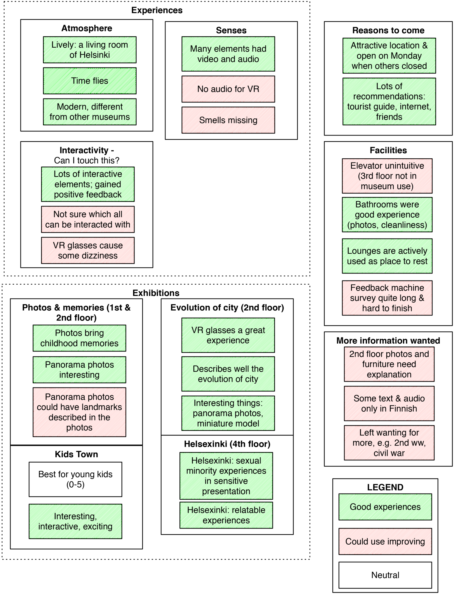
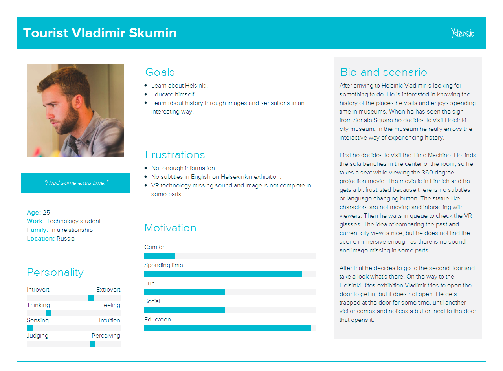
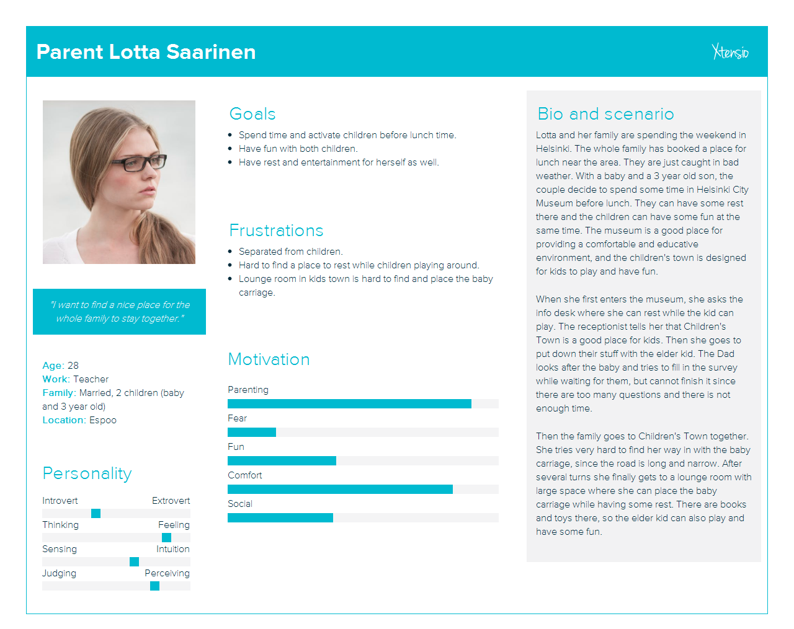
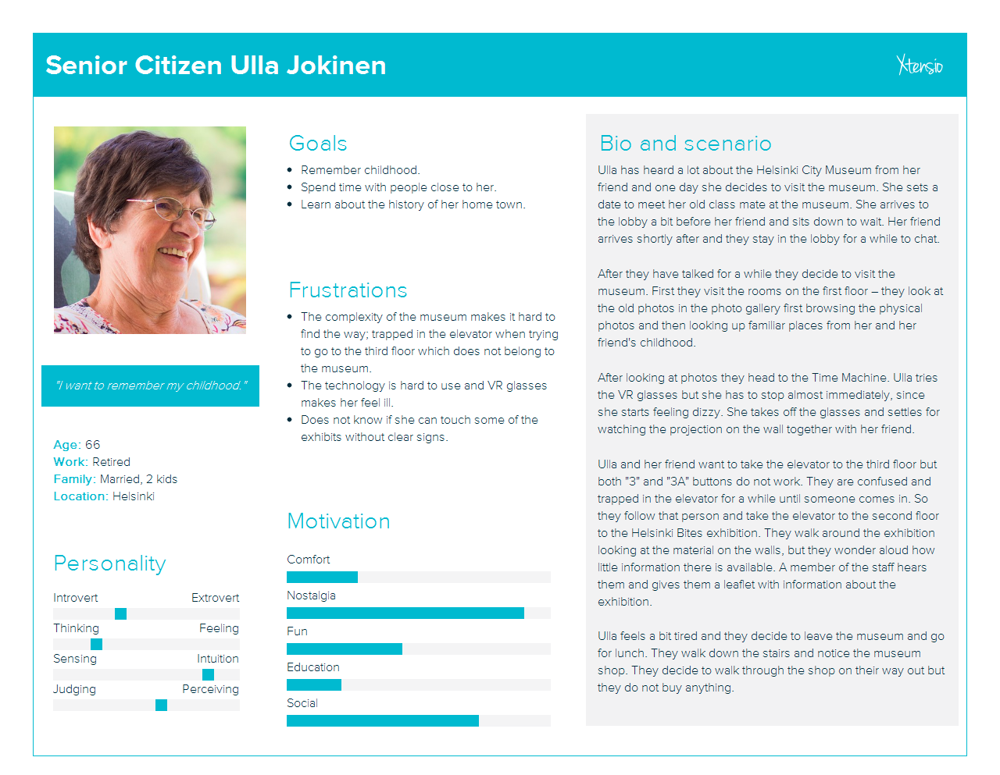
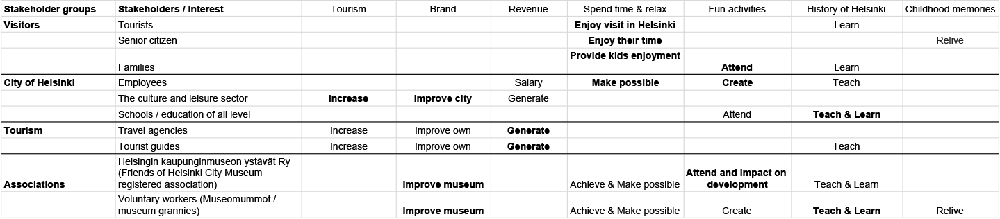
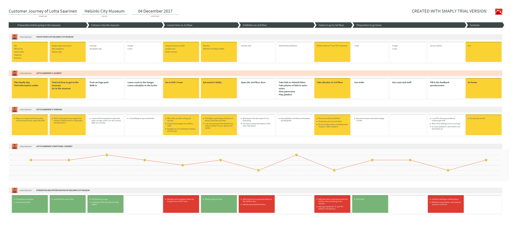

Helsinki City Museum
Research and service design / Navigation / Experience
Helsinki City Museum research project is focused on identifying issues in the service design of the museum and improve the experience of museum visitors.
We went field study to the museum in groups of two, and conducted both interviews and observations of the museum visitors. We went to different floors and exhibitions and ask people’s opinions about their experience. I also tried to follow some visitors to go together with them and not intrude in their choice of where to go next.
Affinity Diagram
We started our qualitative analysis of our user research of Helsinki City Museum by reading the interview transcripts and our own notes of the visits to the museum. While reading, we wrote down on post its comments, positive and negative observations and other interesting statements made by our interviewees. When we had gone through the interviews and our notes and had produced a heap of post-its, we started grouping them. We had no predefined rules for grouping, but we just grouped together post-its that we felt were somehow linked.
Personas
Based on our research we defined three main user groups of the Helsinki City museum: Tourist, Parent and Senior citizen.
Below are the main characteristics of each user group, one persona for each group, some defined tasks for each persona and a scenario describing possible problems that the persona might have when visiting the museum.
  Stakeholder Map
The direct stakeholders include visitors of the museum and employees and managers of the museum. For visitors, associated parties are e.g. travel agencies (the tourist agencies and guides, according to interviews, recommend the museum to the tourists). Also the employer, namely, the city of Helsinki as the owner, is a key stakeholder to the museum.
Below stakeholders from the city of Helsinki and the associations affiliated with the museum were mostly collected from the website of Helsinki City Museum.
The visitor interests are rather self-explanatory and the results are clear from the interviews, as shown in personas. For the city, the main drive for having the museum is not about directly creating revenue, as visiting the museum is always free. The benefits of the city are more indirect and come from improving the city brand and attractiveness. The atmosphere in the museum could be described as “the living room of Helsinki”.
The drive for commercial stakeholders in tourism are also quite self-explanatory: the tourism businesses involved with the city are mainly interested in generating revenue. The associations and voluntary workers affiliated with the museum work for the common good: their core interests are in developing and getting involved with creating the enjoyable atmosphere in the museum.
Customer Journey and Identified Problems
We picked persona Parent Lotta Saarinen as the representative customer, because she is a typical examples of the family visitors. We also integrated problems from the other two personas and created a customer journey for her.
We divided the whole customer journey into 7 stages: “Preparation before going to the museum”, “Entrance into the museum”, “Leisure time on 1st floor”, “Exhibition on 2nd floor”, “Failure to go to 3rd floor”, “Preparation to go home”, and “Go home”. In the meantime we have identified issues in her entire visiting experience.
